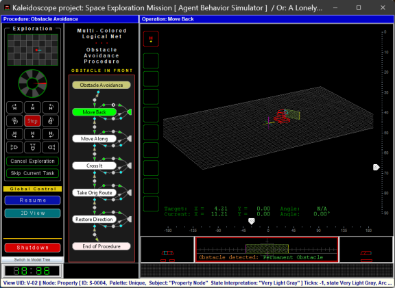

This page presents a brief overview of the Space Exploration Mission software—an active agent-robot behavior simulator implemented as a Java desktop application. The application simulates a Mission Control and Monitoring Center (MCMC) interacting with a remote Agent—a robot rover capable of executing various operations. The Agent’s task is to explore the designated space, collect environmental parameters, and transmit its current coordinates—along with the collected data—to the MCMC in accordance with scheduled data-exchange sessions. The Agent can be controlled manually via on-screen controls, or automatically by the McLN-based Agent Behavior Controller (ABC). The ABC processes inputs from the Agent's sensors, recognizes arising situations, makes real-time control decisions, and initiates actions by communicating with the Agent's local operation controllers. A screenshot of the application's layout is presented in Figure 1.

Figure 1. The Space Exploration Mission application snapshot.
The application interface mimics an MCMC dashboard. It consists of the following control and monitoring panels: (1) The Manual Agent Control panel (left), (2) the McLN-based Agent Behavior Controller (center), (3) the Agent Observation Monitors—a cluster of monitors on the right side of the screen displaying: a) a 3D view of the remote world and the agent executing its mission, b) 2D front and side views of the agent, c) the world view from the rover's cabin, and (4) the Running Text Panel—located below the monitors—displaying data received from the remote rover.
The McLN models utilized by the ABC were developed using the Modeling & Simulation Environment software application, which is described on the page: “Qualitative Dynamical Systems Modeling & Simulation Environment”.